概述
本讲继续介绍处理器流水线的设计，为处理器设计的内容收尾。
（一）控制通路的设计与数据通路的完善
1. 流水线化的设计统一
流水线设计的特点在于，不同部分的硬件在同一时间执行不同的指令，所以同一时刻的控制信号来源于不同的指令。而这些控制信号都是在ID（解码）阶段产生的，所以需要流水线化的设计，将信号逐步向后输送。
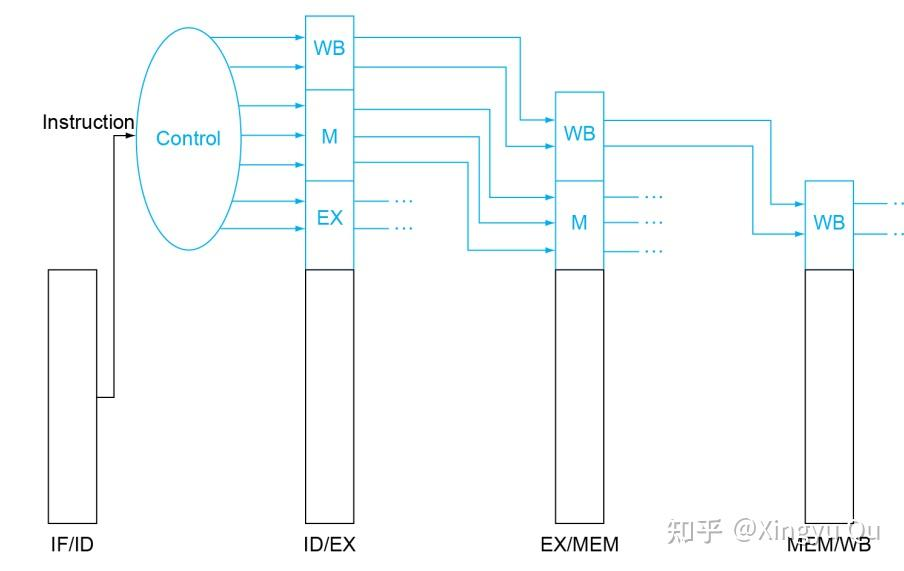
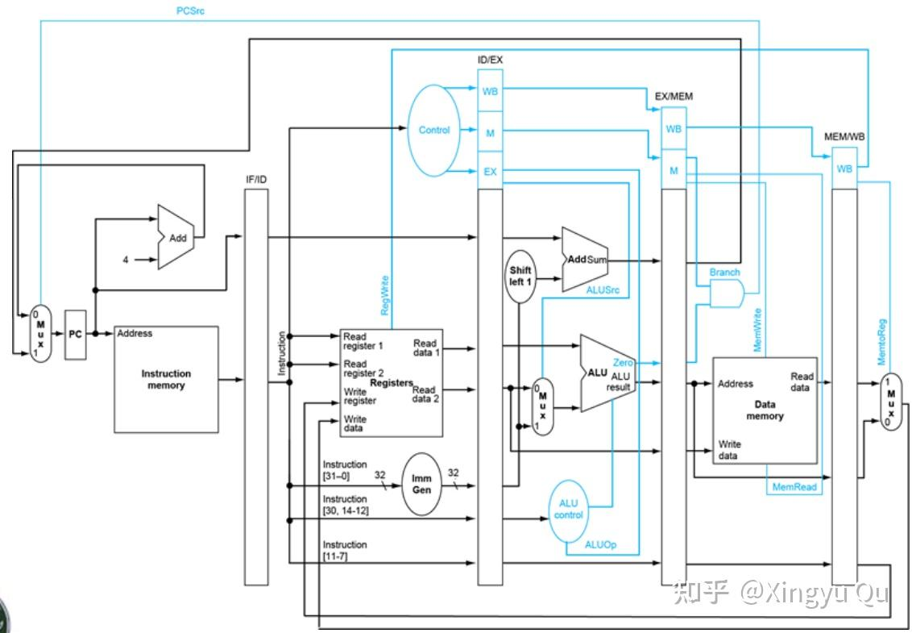
2.前递单元（Forwarding Unit）的设置
由上一讲可知，当前后指令存在数据依赖时，需要添加数据通路，将前一条指令的结果不等WB就传递给后一条指令。这样的数据通路我们通过添加前递单元实现。不难想到，要实现前递，需要一个另外的控制信号来控制ALU的source选择。
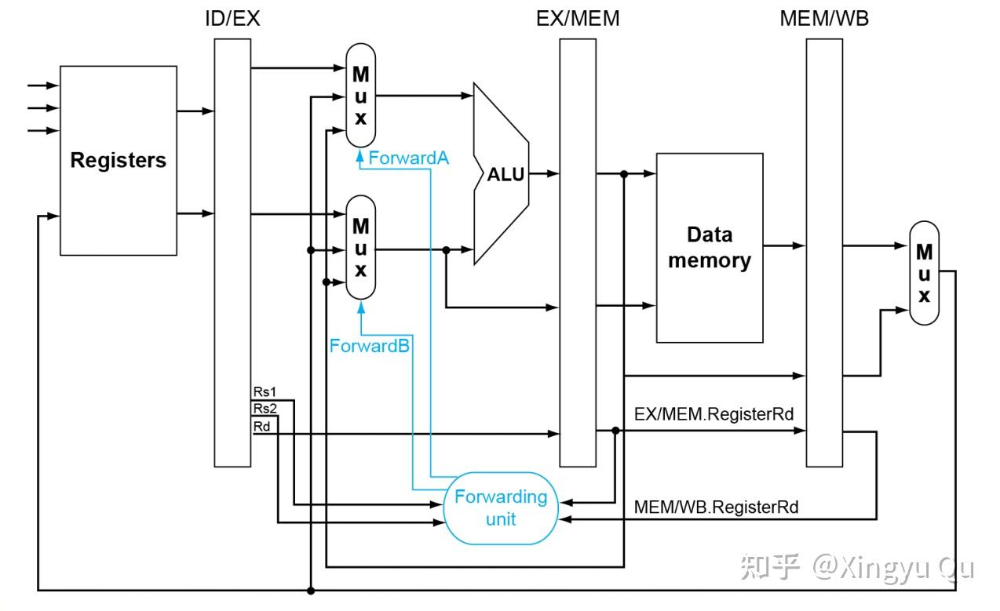
（1）ForwardA=00 取ID/EX reg中的数据（此时无Data Hazard）
（2）ForwardA=01 取EX/MEM中的数据
（3）ForwardA=10 取MEM/WB中的数据（load指令的Data Hazard）
（ForwardB同理）
由此可以得到触发前递的条件：
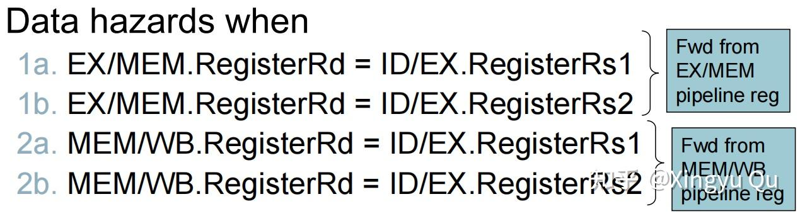
此外，还需要满足：
（1）EX/MEM和MEM/WB中指令的寄存器号不能为0（写x0是无效的）
（2）EX/MEM和MEM/WB中指令的控制信号RegWrite为1（只有WB时才会数据冒险）
多重数据冒险
考虑以下一段指令：
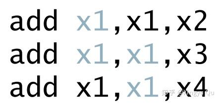
当第三条指令开始执行时，第一条指令的MEM/WB寄存器和第二条指令的EX/MEM寄存器都会构成x1的数据冒险条件。这时，第二条指令的数据较新，所以第一条指令的MEM Hazard不复存在，所以需要修改MEM Hazard的条件：
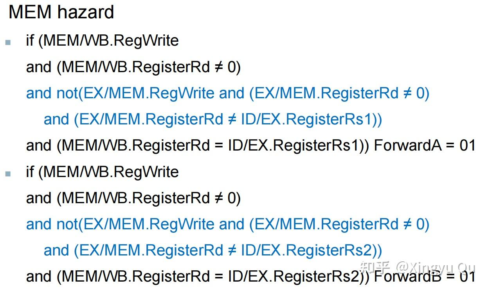
由此我们得到了带有Forwarding Unit的架构：
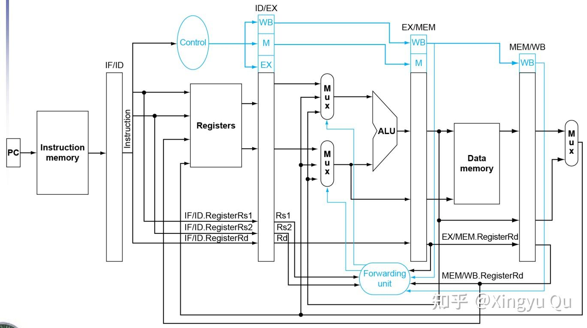
3. 冒险检测
对于load指令的数据依赖，由于是MEM Hazard，按照已有的方式必须要停滞一个周期。
需要在现有的设计中加入探测MEM Hazard的组块，来提示流水线停滞。
显然需要在解码阶段（ID stage）来进行这个操作，触发的条件是：MemRead，且与上一条指令存在数据依赖，即：
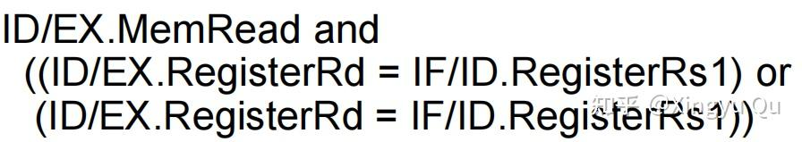
如果探测成功，流水线停滞并插入bubble。
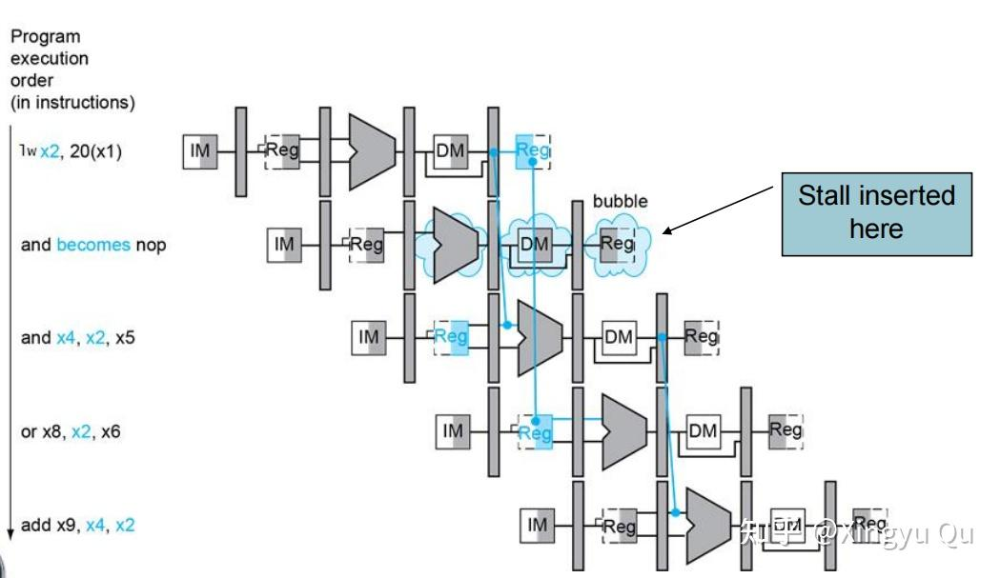
插入 bubble 需要同时控制流水线前段与后段的状态。
对于ID之后的部分，我们希望这些stages不要继续工作，所以可以将ID/EX register中的寄存器信号设为0，这样再传递到后面的stages就不会进行有效的操作。
对于ID及之前的部分，需要保持这些数据不动，也就是暂停IF/ID stage和PC的更新，这样下个cycle中IF和ID都会重复上个cycle的操作。
由以上的分析，可以确定Hazard Detection Unit的输入和输出：
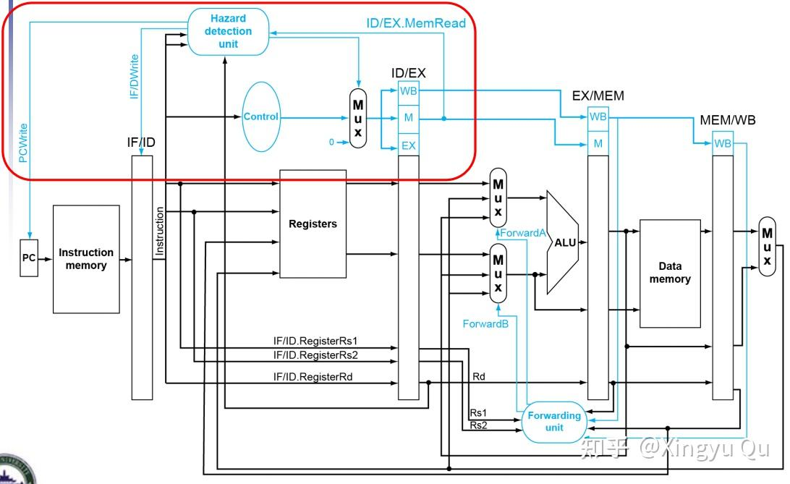
这种设计带来了周期阻塞，虽然降低了性能，但是对得到正确的运行结果是必要的。别忘了，编译器还可通过重排指令执行顺序的方法来消除这种阻塞。
4. 分支冒险
再来看分支冒险，对于原有的数据通路，我们在MEM阶段得到zero信号，进而与译码结果融合判断是否跳转。这样会导致三个周期的浪费：
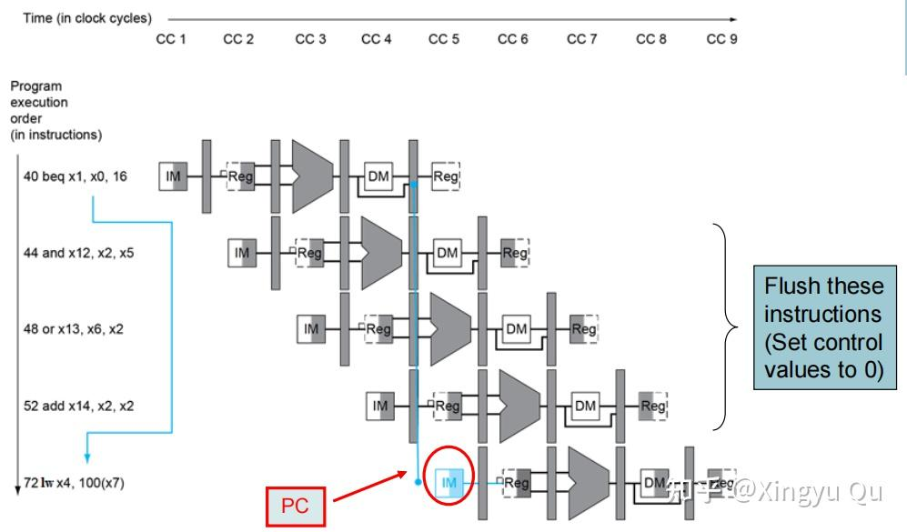
如果需要降低这种周期的浪费，就必须将指令的跳转判断前移，这时会带来硬件冲突，考虑在ID阶段添加硬件进行判断。我们不得不考虑两个问题：
（1）为什么在ID阶段？因为ID译码后我们就拥有了所有可以判断跳转的信息（指令类型、计算式），可以最大程度降低周期的浪费。
（2）ID阶段需要添加什么部件？做什么？对B型指令我们首先要设计硬件来对两个rs进行比较（对beq指令而言比较相等即可）；其次需要计算跳转地址。
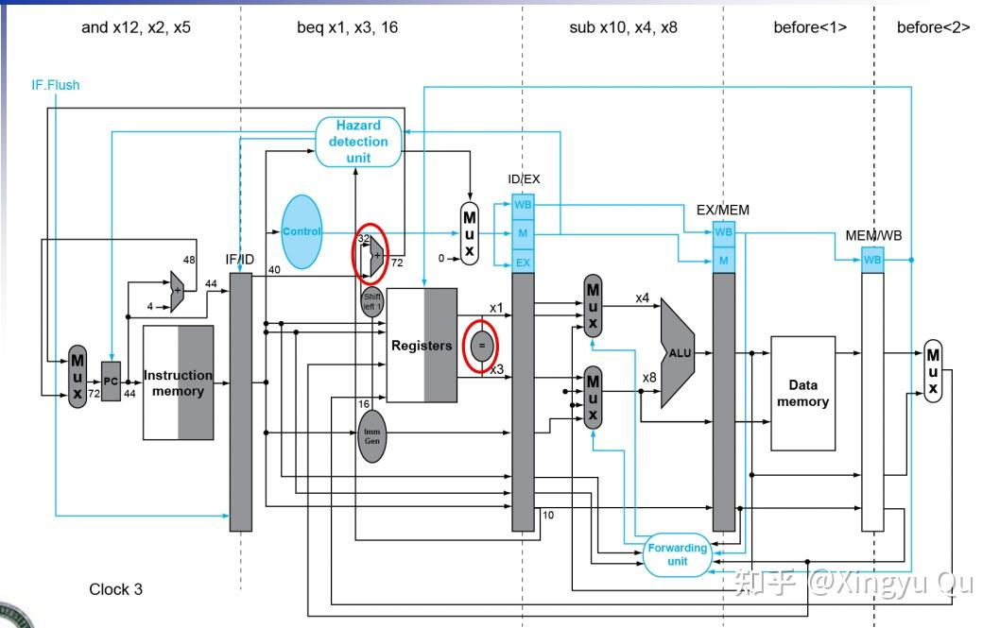
在ID阶段判断跳转，可以只浪费一个周期：
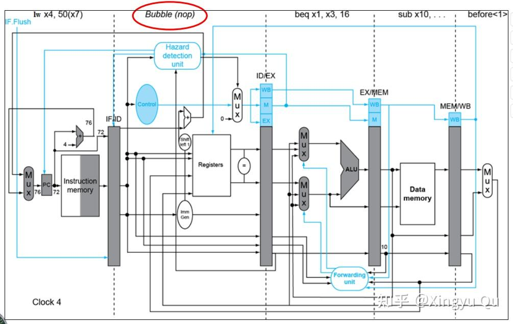
但是这种前移会引发一个新的问题：数据冒险。在之前的指令中我们往往在EX阶段需要数据，在发生数据依赖时使用前递单元（Forwarding Unit）传送数据。而更改后的beq单元在需要在ID阶段就使用数据，所以有更高的概率会发生数据依赖甚至阻塞。
此外，需要关注的是，我们加入了一条IF.flush线，会把所有的control signal置为0，实现填充nop指令。
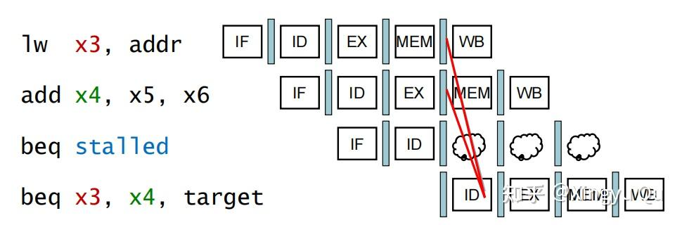
如果紧邻的lw和beq发生数据依赖，需要停顿两周期。
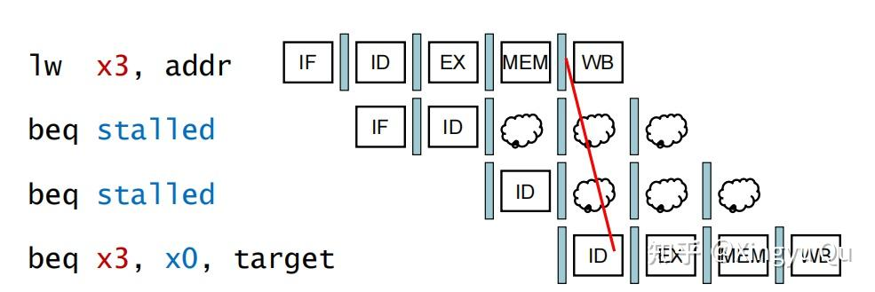
（二）动态预测跳转
之前我们讨论的分支预测形式都是预测分支预测不发生，并在预测分支错误时清空流水线。这种方式对于简单的五级流水线，再结合基于编译的预测，就基本足够了。但是在流水线更深的处理器或者多发射的处理器中，跳转预测错误的惩罚会相当严厉。
可以先检查指令中的地址，查看上一次该指令执行时条件分支是否发生了跳转，如果答案是肯定的，则从上一次执行的地址中取出指令。这种技术称为动态分支预测。分支预测在IF阶段进行，在预测成功的情况下，分支指令的延迟会被消除。
1.一位预测器（1-Bit Predictor）
1位预测器正如上述方法，简单地预测为与上一次分支指令的结果相同。但是具有缺陷：每一次循环会预测错误两次（第一次和最后一次）
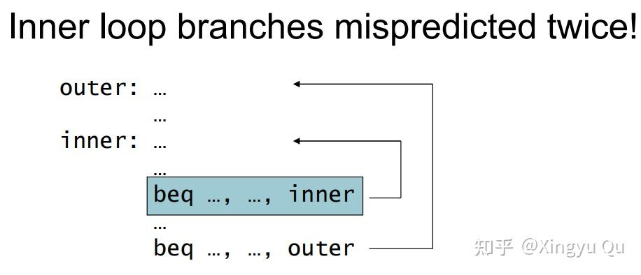
2.两位预测器（2-bit predictor）
理想状态下，对于规律性很强的分支指令来说，分支预测的准确率应该与分支发生的频率相匹配。为了改进上述缺点，我们引入更多位的预测机制。在2位预测中，只有在发生连续两次预测错误时结果才会改变：
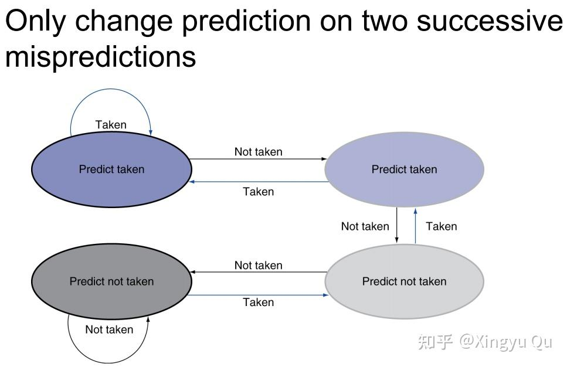
在上述的例子中（经常跳转或经常不跳转），每次外层循环中只会发生一次预测错误。
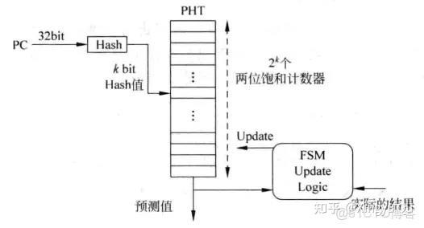
CPU 在取指阶段拿到当前指令的 PC（32 位），通过图中左侧的 Hash 电路把 PC 压缩成 k 位索引（因为 PHT 只有 2^k 个入口），然后用这 k 位索引访问 PHT（Pattern History Table） 中的对应入口；
PHT 的每个入口是一个 2-bit 饱和计数器，它的高位用作预测输出（例如 10、11 表示预测跳转），指令后来在执行阶段会给出实际的跳转结果，再由右边的 FSM Update Logic 根据实际结果对同一个位置的 2-bit 计数器进行自增或自减（饱和在 00 和 11 之间）。
“地址缓存”本质上就是 PC→k-bit Hash→PHT 索引 这一映射，使预测器能在极短时间内找到对应的计数器并保持一致地更新它。
这种分支预测器可以告知我们是否会发生跳转，但是仍然需要对分支目标地址进行计算。在五级流水线中，这种计算需要一个指令周期，意味着发生跳转时需要一个周期，这就失去了预测的优势。
所以一种常见的解决方案是使用缓存来保存目标地址或目标指令以作为分支目标缓存。
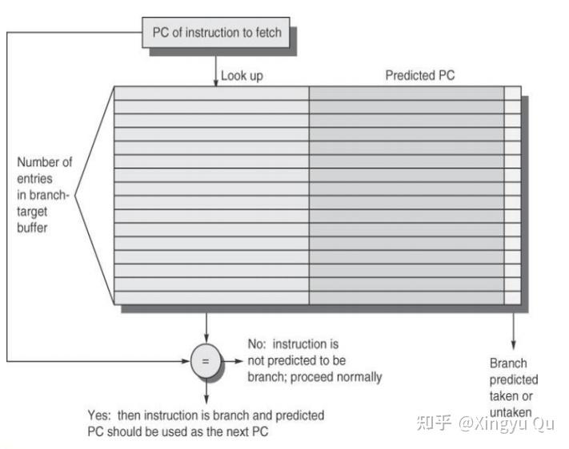
这张图展示的 BTB（Branch Target Buffer）本质上是一张 以 PC 为键、以分支目标地址为值的缓存表，它让处理器在 IF 阶段完全不必重新计算“跳转目标地址”。
IF 取到 PC 后立刻用它去查表，如果表中存在匹配条目，就说明这条指令以前被识别为分支，并且目标地址已经存在于表的右侧“Predicted PC” 中，于是处理器能在 同一个周期 直接把该地址作为下一条取指的 PC；若查不到，此指令就被当作普通指令顺序执行。
BTB 通过提前缓存“该 PC 对应的跳转目标 PC”，把原本需要在 ID 阶段通过加法器计算的跳转地址搬到 IF 阶段直接读取，从而避免了额外的一次地址计算延迟，并让预测跳转能在流水线最前端立即生效。
3.其他预测机制
上面的预测器只依据局部信息进行预测，下面两种现代处理器的主流预测方法对这一点进行了改进。
（1）相关预测器
相关分支预测器的核心思想是：一条分支的走向往往不是单独决定的，而是和之前几条分支的行为有关。
它维护一段有限长度的历史比特串，把最近的 “跳/不跳” 记录下来，再把这段历史和当前指令的 PC 一起混合，用来索引更大的预测表。
这样，同一条指令在不同历史上下文里可能触发不同的预测模式，比传统只看自己的 2-bit 计数器要灵活得多。在大量具有循环结构、条件依赖的程序里，这类预测器通常能显著提升预测准确率。
（2）锦标赛分支预测器
锦标赛预测器并行使用多种预测器，并通过选择器动态采用近期更准确的结果。它会同时运行一个“擅长看局部规律”的预测器和一个“擅长看全局相关性”的预测器，然后用一组小计数器来判断最近哪一路更准，从而动态选择最终的预测结果。
这样一来，不同类型的程序、不同阶段的代码都能用到最适合自己的预测方式，整体效果往往比单一路线强得多，也更稳定。
（三）例外
控制逻辑是处理器设计中最有挑战的部分，例外和中断是控制逻辑需要实现的任务之一。他是分支指令之外改变控制流执行的另外一种方式。例外不仅是CPU内部意外事件的处理方式，更是经过扩展可以处理与CPU进行通信的I/O设备。
在原书（《计算机组成与设计 软件与硬件接口（RISC-V版）（原书第二版））》）中，作者使用例外来指代意外的控制流变化（不区分内部外部），而中断只指代处理器外部事件引起的控制流变化。
1.RISC-V指令处理例外的方式
当例外发生时，处理器必须执行的基本动作是：在系统例外程序计数器（Supervisor Expection Program Counter, SPEC）中保存发生例外的指令地址，这个计数器的作用是完成例外处理后，可以返回程序。（当然也可能是程序直接终止了）
同时将控制权交给操作系统，操作系统会调用其他程序来处理异常。这时候操作系统需要知道例外的原因，从而知道调用哪个处理程序。RISC-V中使用的方法是设置系统例外原因寄存器（Supervisor Exception Cause Register，SCAUSE），该寄存器中记录了例外的原因。
另外一种方式是向量式中断，在基址寄存器中保存向量式中断内存区域的起始地址，例外原因作为偏移量相加得到向量地址，进而完成跳转。
2.流水线中实现的例外
在流水线中，关键的一个思想是：将例外看做另一种控制冒险。正如之前处理分支指令那样，需要在流水线上清除掉当前引发例外的指令之后的指令，并从新地址开始取址。和分支指令不同的点在于，例外会引起系统状态（区别于用户状态）的变化。
处理分支预测错误时，本讲将取指阶段的指令变为空操作(nop)，以此来消除影响。
对于进入译码阶段（ID）的指令，增加新逻辑控制译码阶段的多选器使输出为0，流水线停顿。添加一个新的控制信号ID.Flush，它与来自于冒险检测单元的stall信号进行或(OR)操作。使用该信号对进入译码阶段的指令进行清除。
对于进入执行阶段（EX）的指令，使用一个新的控制信号EX.Flush，使得多选器输出为0。
具体的异常入口地址由实现与运行环境决定。为保证从正确地址开始取指，我们为PC多选器新增一个输入，保证能将上述例外入口地址送给PC寄存器。
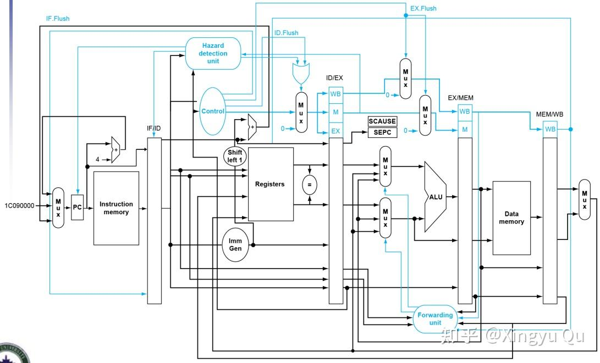
对于流水线处理器，每个周期同时有多条指令在流水线中执行，例外处理的挑战在于如何将例外与指令进行对应。
同时一个周期可能发生多个意外，需要对他们进行优先级排序并依次执行。在RISC-V中，例外的排序是由硬件实现的。SCAUSE寄存器中会记录当前最高优先级的例外信息。
对于例外处理，我们会在后面的章节中进一步学习。
总结
本讲介绍了流水线处理器的后一部分内容，对流水线寄存器有了较为完全的认识。在现代的处理器中，大多数采用指令间并行（静态多发射、动态多发射）的方式来提高处理器的效率。此外，多核处理器的内容没有纳入教学范围，但是对于深入理解CPU，了解多核是非常有必要的，这也有助于理解GPU等新型计算资源的特性。